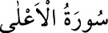

<a name=10601></a><br/>
<b>87- el-A’LÂ SÛRESİ</b><br/>
<i><b>Allah’ın «Yüce» anlamındaki adıyla başladığı için «el-A’lâ» denilen bu sûre 19</b></i><br/>
<i><b>âyet olup, Mekke’de inen ilk sûrelerdendir. Cenab-ı Allah bu sûrede kâinatın</b></i><br/>
<i><b>esrarını, oluşunu, işleyişini özlü bir anlatımla ifâde etmiştir.</b></i><br/>
